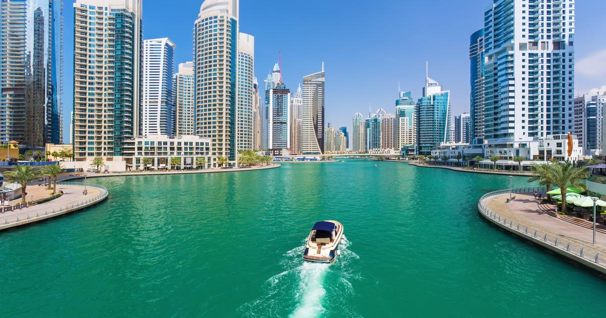

A Favorite Travel Destination: Dubai

Dubai is a renowned travel destination, known for its blend of modernity and tradition, offering a variety of experiences for all types of travelers. Here are some of the key highlights that make Dubai attractive:
1. Iconic Landmarks
Burj Khalifa: The tallest building in the world, offering panoramic views of the city from its observation decks.
Palm Jumeirah: A man-made island shaped like a palm tree, featuring luxury hotels, beach resorts, and upscale restaurants.
Dubai Mall: One of the largest shopping malls globally, with more than just retail – it has an aquarium, ice rink, and theme parks.
Dubai Frame: A giant frame that provides a fantastic contrast between the old and new parts of the city.
2. Luxury and Modern Architecture
Dubai is synonymous with luxury. It boasts futuristic skyscrapers, world-class hotels like Burj Al Arab (a 7-star hotel), and sprawling shopping centers that cater to high-end tastes.
3. Cultural Heritage
Dubai Museum: Located in Al Fahidi Fort, this museum offers insights into the traditional Bedouin lifestyle before the oil boom.
Al Fahidi Historical Neighborhood: A place to explore the cultural roots of Dubai, with wind towers, traditional buildings, and art galleries.
Gold and Spice Souks: Traditional markets where you can experience the vibrant trading culture of the region.
4. Adventure and Activities
Desert Safari: Visitors can enjoy dune bashing, camel rides, and traditional Bedouin dinners under the stars in the Arabian desert.
Ski Dubai: A unique indoor ski resort located in the Mall of the Emirates, offering skiing and snowboarding experiences in the desert.
Skydiving and Water Sports: Thrilling activities such as skydiving over Palm Jumeirah, jet skiing, and parasailing are popular.
5. Shopping Paradise
Dubai Shopping Festival: Held annually, it attracts tourists worldwide with its discounts, entertainment, and cultural events.
Luxury Brands and Boutiques: High-end brands are available in the malls, and Dubai has a strong reputation for duty-free shopping.
6. Beaches and Resorts
Jumeirah Beach: A popular destination for beachgoers with soft white sand and clear waters.
La Mer: A beachfront area with trendy cafes, restaurants, and watersports options.
7. Cuisine and Dining
Dubai offers a melting pot of international cuisines, from Michelin-starred restaurants to local Emirati dishes. Food festivals and gourmet dining experiences are also a huge draw for food lovers.
8. Year-round Events
Dubai Expo: The city often hosts global expos, trade shows, and other major international events.
Art Dubai: One of the leading art fairs in the Middle East, featuring contemporary art from around the globe.
9. Accessibility
Dubai's central location makes it an international hub, with easy connections from Europe, Asia, and Africa. The Dubai International Airport is one of the busiest in the world.
10. Safety and Cleanliness
Dubai is considered one of the safest cities for travelers, with strict laws and low crime rates. It’s also known for its clean streets and modern infrastructure.
Whether you're looking for luxury, adventure, or a glimpse into the Middle Eastern culture, Dubai offers a diverse and vibrant travel experience.